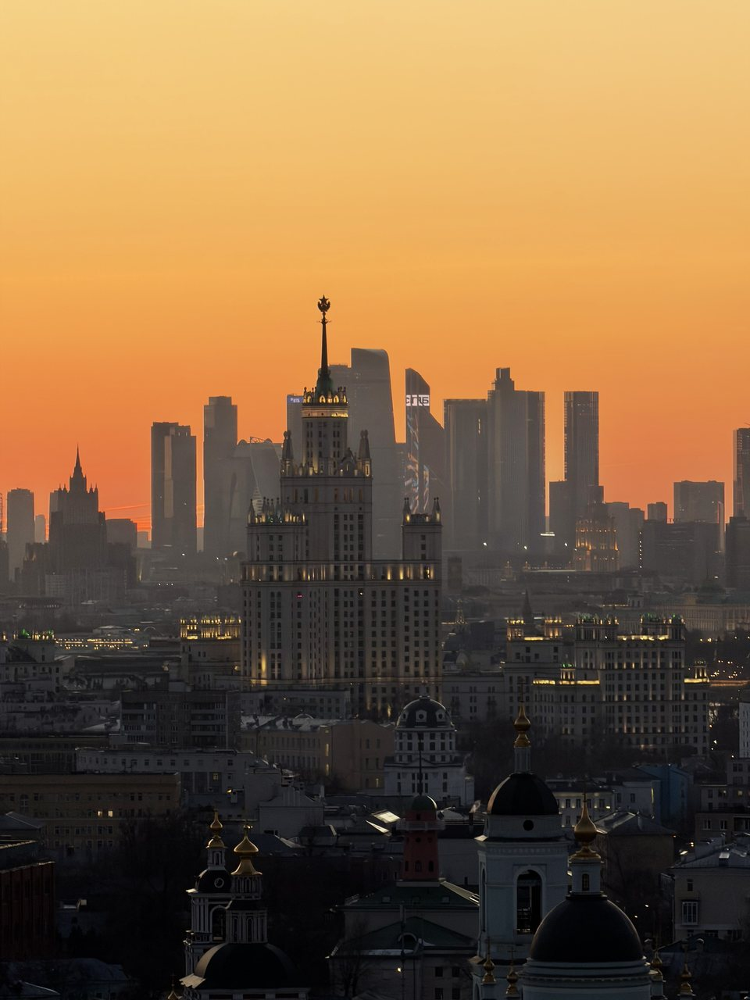
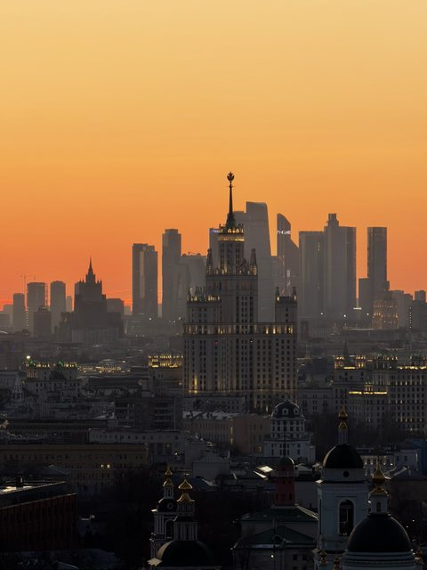
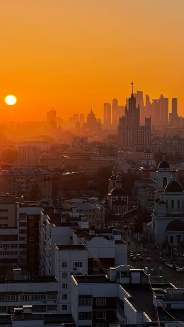
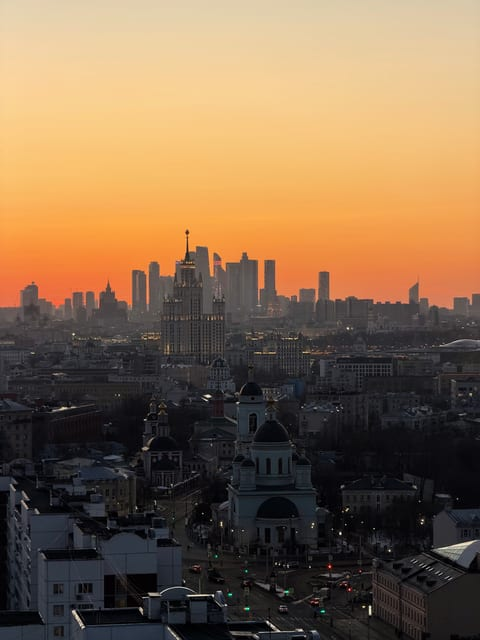
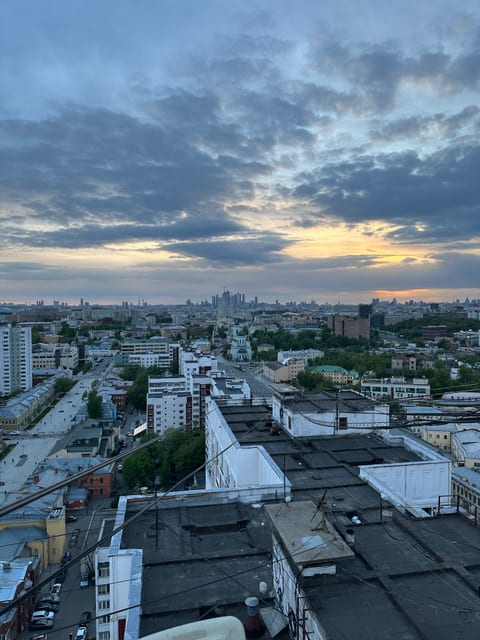
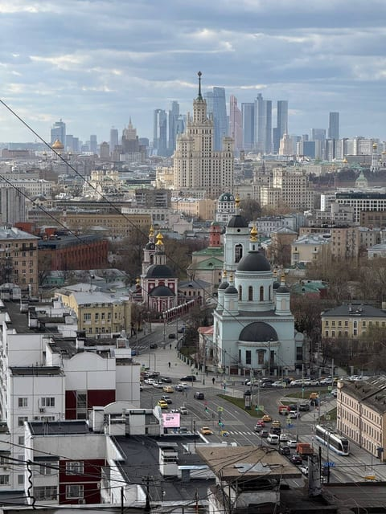
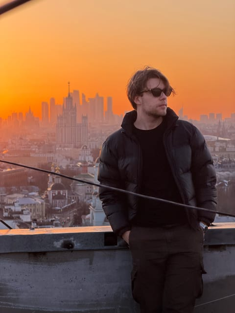

Старая и новая Москва
Крыша на Римской
Редкий ракурс, где сталинская высотка и башни Москва-Сити выстраиваются в один силуэт: классика на переднем плане, стекло делового центра — за ней.
Эту крышу мы сейчас не предлагаем — посмотрите другие в каталоге.
Что видно с этой крыши
Главная особенность этой точки — совмещение эпох. Сталинская высотка стоит на среднем плане, а прямо за ней, чуть дальше, поднимаются башни Москва-Сити. В закатной дымке они превращаются в общий силуэт, где старая и новая Москва читаются одним слоем.
Передний план держат купола и колокольни: прямо под крышей — старые московские кварталы с церквями, невысокими домами и дворами. На дневных кадрах по улице внизу идёт трамвай, и это добавляет городу живости.
Когда солнце садится низко, вся панорама уходит в оранжевый и охристый, а здания превращаются в слои силуэтов — от тёмного переднего плана до почти белого горизонта.
Когда лучше приходить
Лучше всего в золотой час и на закате: именно тогда появляется та самая дымка, которая склеивает высотку и Сити в один силуэт. Днём точка тоже работает — виды остаются, но контраст между планами слабее.
Кому подойдёт
Для тех, кому нужен «смысловой» кадр, а не просто панорама: в одной фотографии сразу видно, из чего состоит Москва. Подходит и для фотосессии — на этой крыше у нас снято больше всего портретных кадров на фоне заката.
Как попасть
Подняться можно только вместе с сопровождающим: мы встречаемся у дома в назначенное время, поднимаемся и коротко объясняем правила на площадке. Точный адрес и точку встречи присылаем после подтверждения записи — заранее их не публикуем. Что взять с собой: удобную нескользящую обувь и тёплый слой, вечером на высоте прохладнее, чем на улице. Подробнее — в гиде «Как попасть на крышу в Москве».
Фотографии
Кадры с этой крыши
Все снимки сделаны нами на этой локации — они показывают, что реально видно с точки.






FAQ
Вопросы про эту крышу
Какая высотка видна с этой крыши?
Сталинская высотка, которая на закате оказывается на одной линии с башнями Москва-Сити. Именно это совмещение и делает ракурс узнаваемым.
Что видно днём?
Купола и колокольни старых кварталов под крышей, трамвайную улицу внизу, высотку и Сити на горизонте. Днём панорама читается детальнее, но без закатной дымки.
Подойдёт ли крыша для фотосессии?
Да. Здесь много вариантов фона: закатное небо, силуэт высотки, городские крыши. Можно прийти со своим фотографом.
Над городом